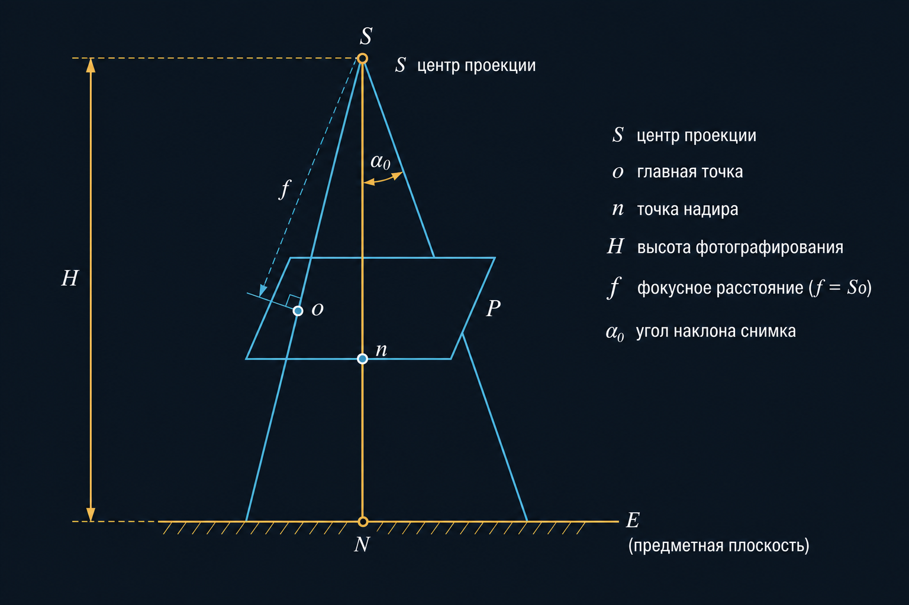
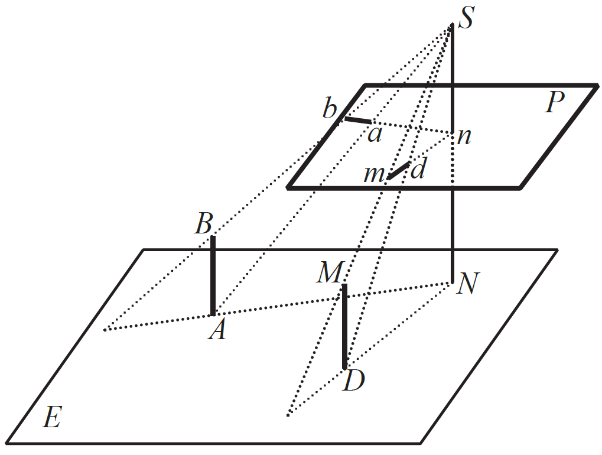
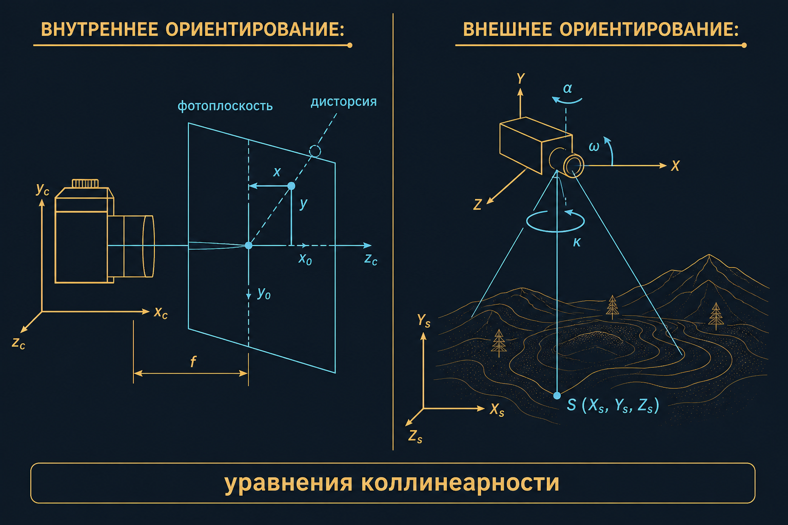
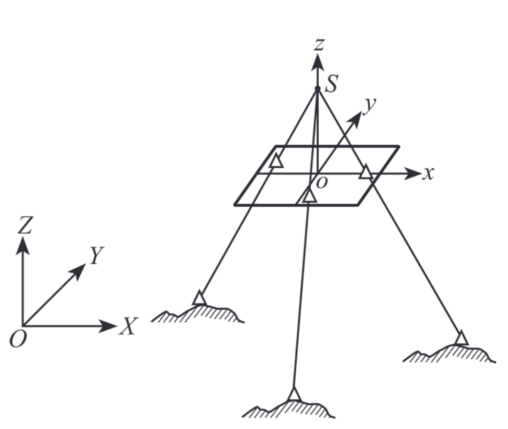
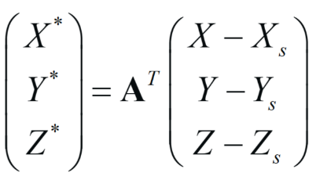
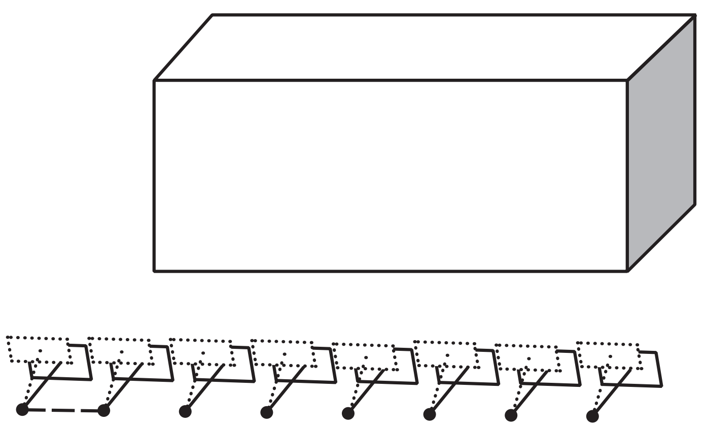
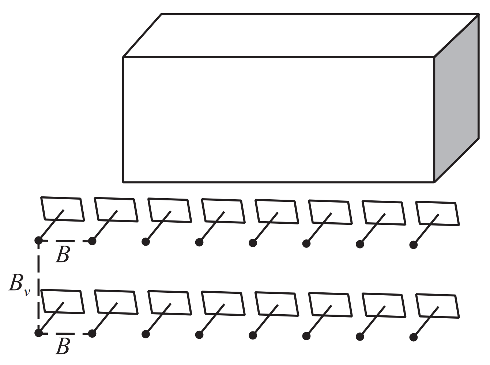

Основы фотограмметрии
Ф10 · пара 1,5 ч · кадровый снимок · ориентирование · засечка
На пару
- Кадровый снимок vs сканер — почему стереопара «классическая»
- Связка лучей, S, o, n, f, H, α — словарь учебника
- Внутренние и внешние элементы, коллинеарность
- Обратная засечка: 3 точки, не на прямой
- Пять случаев наземной съёмки — какой у вас на стенде
Фотограмметрия
Научно-техническая дисциплина: форма, размеры и положение объектов — по их изображениям. ГОСТ Р 51833-2001 · Чибуничев, МИИГАиК, 2022.
Кадровый снимок
Центральная проекция объекта на плоскость приёмника, если можно пренебречь смещениями от дисторсии, атмосферной рефракции и прочих возмущений. Все точки кадра — один момент (центральный или электронный затвор).
Кадровый ≠ сканерный
- Кадр: один центр проекции S на весь снимок
- Сканер / щель: каждая строка — свой S (и своё время)
- Rolling shutter на БВС — родственник сканера: геометрия «плывёт» по кадру
- Классические формулы пары снимков пишут для кадровой связки
Связка проектирующих лучей
Совокупность лучей, которыми получен снимок. Центр проекции S — точка их пересечения; в оптике это передняя узловая точка объектива.
Негатив и позитив
При анализе снимка равноправны обратное (негативное) и прямое (позитивное) изображения. Меняется знак координат — не геометрия связки. Система должна совпасть с калибровкой.
Элементы центральной проекции

Словарь чертежа
- P — плоскость снимка · E — предметная (горизонтальная) плоскость
- S — центр проекции (точка фотографирования)
- главный луч — через S перпендикулярно P
- o — главная точка: след главного луча на P
- So = f — фокусное расстояние съёмочной камеры (калиброванное)
- n — точка надира: отвес из S на P · N — её проекция на E
- SN = H — высота фотографирования относительно E
- α0 — угол наклона снимка
Главная точка и надир
on = f · tg α0на плановом снимке α ≤ 3°, o и n почти совпадают
Вертикали объекта сходятся в n, не в o. На перспективном кадре здания «падают» к надиру.
Что изображается чем
- Точка местности M → точка снимка m
- Прямая на местности KL → прямая kl на снимке
- Исключение: прямая, прошедшая через S, схлопывается в точку
- Отвесные линии AB, DM → ab, dm пересекаются в n


Почему так
Плоскости SAB и SDM вертикальны и содержат S. Их пересечение — отвес SN, который протыкает снимок в n. Следы этих плоскостей на P — прямые ab и dm, значит они встречаются в n.
Элементы внутреннего ориентирования
Положение центра проекции относительно снимка: f и координаты главной точки (x0, y0). Плюс параметры дисторсии объектива. Это паспорт камеры, не положение в мире.
Внутреннее ориентирование на практике
- Начало СК снимка — в o или в углу кадра: смотрите схему
- Пиксели → миллиметры через p (Ф04, А04)
- o не обязана совпадать с центром JPEG
- Калибровка: стенд, шахматка, самокалибровка в блоке
- Пока дисторсия не в модели, прямые на краю — дуги
Внутреннее и внешнее

Элементы внешнего ориентирования
Шесть величин положения и ориентации камеры в СК объекта OXYZ в момент экспозиции: XS, YS, ZS и три угла (часто ω, α, κ).
Три угла — не догма осей
- Повернуть одну СК относительно другой можно только тремя углами
- Вращать можно снимок относительно объекта или наоборот
- Левые / правые углы, разный порядок осей — разные школы
- На экзамене важен смысл: ортогональная матрица перехода R
- Бортовые GNSS/IMU — приближённые ЭВО, не «уже готово»
Уравнения коллинеарности
Точка объекта, центр S и точка снимка лежат на одной прямой.
x − x0 = −f · X′ / Z′
y − y0 = −f · Y′ / Z′
X′, Y′, Z′ — координаты точки в СК камеры: R · (X − XS, Y − YS, Z − ZS)
Зачем коллинеарность
- обратная засечка — ЭВО по опознакам
- прямая засечка — XYZ точки по двум снимкам
- уравнивание блока / связки
- ортотрансформирование (А12)
- в CV то же самое называют pinhole + pose
Опорная точка
Опознана и на местности, и на снимке; координаты в СК объекта известны. На схемах — треугольник. Контрольная точка в уравнивание не входит.
Обратная фотограмметрическая засечка



Счёт неизвестных
- неизвестных ЭВО: 6 (XS YS ZS, ω α κ)
- одна опорная даёт 2 уравнения (x и y)
- минимум 3 опорные → 6 уравнений
- не на одной прямой — иначе система вырождена
- больше трёх — МНК, появляются невязки (ошибка репроекции)
Внутренние элементы f, x0, y0 здесь считают известными.
Прямая засечка
Известны ЭВО двух (и более) снимков, отождествлена точка → ищем XYZ объекта. Стереопара Ф08 — частный случай: базис известен, параллакс даёт глубину.
Нормальный случай
Оси x, y, z камер примерно параллельны осям X, Z, Y базисной СК.
α1 ≈ α2 ≈ 0° · ω1 ≈ ω2 ≈ 90° · κ ≈ 0°
Формулы параллакса самые простые. Это «учебниковый» полёт над равниной.
Равноотклонённый
Оптические оси параллельны друг другу и отклонены от оси Y базиса на угол α.
α1 ≈ α2 ≈ α · ω ≈ 90° · κ ≈ 0°
Равнонаклонный
Оси параллельны, обе наклонены к горизонту на угол ω.
α ≈ 0° · ω1 ≈ ω2 ≈ ω · κ ≈ 0°
Типичная «смотрит чуть вперёд» при маршруте.
Конвергентный
Оси повёрнуты друг к другу и пересекаются под углом конвергенции γ. Это стенд Ф08/Ф09.
Плановые формулы Bx = L(1−P) сюда не переносятся без оговорок.
Общий случай
Ось примерно в середину объекта, ориентация произвольная. Решают полной коллинеарностью, без упрощений нормального случая.
Маршрут и блок


Маршрут — ряд с Px. Блок — несколько маршрутов с Py. Связующие точки и триплеты сшивают пары в сеть.
От кадра до карты
Обработка: было / стало
Аналог
Оптико-механические приборы, стереомодель «в воздухе», оператор ставит марку.
Цифра
Соответствия → уравнивание связки → плотное облако → ЦМР / орто. Геометрия та же.
ПО не отменяет учебник
Metashape, RealityCapture, ContextCapture, Pix4D, Meshroom, VisualSFM — разные оболочки одной коллинеарности. «16 ГБ ROM» на слайде pptx — опечатка, речь про ОЗУ.
После геометрии
- привязка блока (ПВО, А04 / А12)
- полевое дешифрирование: провода, тип столба, этажность — с орто «не видно»
- отчёт: СК, допуски, контрольные точки
Вопросы
- Чем кадровый снимок отличается от сканерного?
- Что такое связка лучей, главная точка и точка надира?
- Перечислите элементы внутреннего и внешнего ориентирования.
- Сколько опорных минимум для обратной засечки и почему не на одной прямой?
- Какой случай съёмки на стенде Ф09?